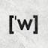

Iteration 1
RetrieveGate decision
RetrieveReasoningAdditional evidence would help identify known extremal constructions, bounds, and optimization strategies for this specialized overlap problem. No relevant documents are available in the search database, so a fresh…
Additional evidence would help identify known extremal constructions, bounds, and optimization strategies for this specialized overlap problem. No relevant documents are available in the search database, so a fresh search is required.
Knowledge before this stepThe current program generates a random, mean-constrained step function and evaluates the maximum cross-correlation between h and 1-h. The only measured result is c5 = 0.4854 with full validity and no information about…
The current program generates a random, mean-constrained step function and evaluates the maximum cross-correlation between h and 1-h. The only measured result is c5 = 0.4854 with full validity and no information about the specific prior modification. There are no stored search documents. I know the feasibility projection and basic correlation behavior, but the best discrete constructions or analytical bounds for minimizing this maximum overlap remain unresolved; in particular, it is unclear whether structured sequences, optimized lengths, or known Erdős-overlap constructions can substantially outperform randomized perturbations.
Population analysis
📊 State: The retained population contains 1 program with a single score of 2.0602683441977945 at iteration 0.0, with no recorded improvement.
Key Numbers:
• Score range: 2.0602683441977945–2.0602683441977945; mean, median, and quartiles are all 2.0602683441977945.
• Spread: population standard deviation is 0.0, and unique score count is 1.
• Trajectory: the only retained row has outcome “no_parent”, global outcome “baseline”, and delta null.
• Current parent: 1 program, with a gap of 0.0 to the retained best score.
Patterns Observed:
• Parent selection recorded 0 selections across 0 programs; context selection also recorded 0 selections across 0 programs.
• The recent trace contains 1 row, spanning iterations 0.0–0.0, with 0 recorded parent-linked outcomes.
Query · round 1
"Erdős overlap problem" minimum maximum cross-correlation h(x)(1-h(x+t)) construction
Find analytical bounds and explicit discrete or binary constructions that minimize the maximum overlap between a function h and its complement 1-h across shifts.
Query rationale
The current program uses an unoptimized random mean-constrained step function and has no evidence about effective structure or discretization length. Results on the Erdős overlap problem, low-correlation binary sequences, or extremal constructions could identify better deterministic patterns, suitable sequence lengths, and optimization targets for replacing random perturbations.
What this round establishedThe new documents establish that the relevant minimum-overlap constant is near 0.38, substantially below the current random construction's measured c5 of 0.4854; the reported state-of-the-art value is 0.380871,…
The new documents establish that the relevant minimum-overlap constant is near 0.38, substantially below the current random construction's measured c5 of 0.4854; the reported state-of-the-art value is 0.380871, corresponding approximately to a higher-is-better reciprocal score of 2.63 if the evaluator score is 1/c5. The analytical papers provide useful lower bounds, Fourier structure, moment constraints, and convex-program formulations, while the GitHub result is the strongest evidence that a concrete optimized construction can materially improve the current program. However, the retrieved excerpts do not contain the actual optimized vector, sequence, or implementation, so the key missing knowledge is how to reproduce that construction under this evaluator's discrete correlation and feasibility conventions. The next attempt should test deterministic structured or numerically optimized sequences rather than random perturbations, while checking whether the evaluator's zero-padded discrete correlation matches the continuous minimum-overlap formulation.
Kept-document mean prediction 2.33667
Query · round 2
site:github.com/togethercomputer/erdos-minimum-overlap optimized construction vector Erdős minimum overlap code
Find the actual optimized discretized sequence, objective function, and implementation used to achieve the 0.380871 minimum-overlap value, including how its correlation and boundary conventions map to the evaluator's zero-padded np.correlate calculation.
Query rationale
The current random feasible sequence has c5=0.4854, while the retrieved GitHub result implies a substantially better construction with c5 near 0.380871. The documents establish the theory but omit the concrete vector or optimization code. Recovering those implementation details is the most direct path to replacing random initialization with a deterministic or numerically optimized construction and testing score improvement.
What this round establishedThe new GitHub documents reinforce that the target minimum-overlap constant is approximately 0.380871, corresponding to a higher-is-better score near 2.63 under the apparent reciprocal scoring. They also confirm that a…
The new GitHub documents reinforce that the target minimum-overlap constant is approximately 0.380871, corresponding to a higher-is-better score near 2.63 under the apparent reciprocal scoring. They also confirm that a concrete optimized implementation exists in the referenced repository. However, the supplied excerpts still omit the optimized vector, discretization details, and evaluator-compatible implementation. The next attempt therefore still needs either the repository's actual construction data or an untested deterministic/numerical reconstruction, together with verification that its correlation and boundary conventions match this evaluator. No further theoretical evidence is needed before testing such an implementation.
Kept-document mean prediction 2.63
Query · round 3
site:github.com/togethercomputer/erdos-minimum-overlap "h_values" OR "minimum overlap" construction vector code
Find the repository source file or accompanying technical description containing the optimized step-function/vector construction, number of bins, and evaluator-compatible correlation and boundary conventions that achieve the reported 0.380871 bound.
Query rationale
The current program only uses a random perturbation and scores about 2.0603, while the retrieved documents establish that a concrete construction reaches approximately 0.380871 overlap, corresponding to a score near 2.63. The missing construction data—not further theory—is the highest-value information needed to replace the random initializer with a deterministic implementation and verify its discretization and correlation conventions.
What this round establishedThe new GitHub documents reinforce that the target minimum-overlap constant is approximately 0.380871, corresponding to a higher-is-better score near 2.63 under the apparent reciprocal scoring. They also confirm that a…
The new GitHub documents reinforce that the target minimum-overlap constant is approximately 0.380871, corresponding to a higher-is-better score near 2.63 under the apparent reciprocal scoring. They also confirm that a concrete optimized implementation exists in the referenced repository. However, the supplied excerpts still omit the optimized vector, discretization details, and evaluator-compatible implementation. The next attempt therefore still needs either the repository's actual construction data or an untested deterministic/numerical reconstruction, together with verification that its correlation and boundary conventions match this evaluator. No further theoretical evidence is needed before testing such an implementation.
Evidence sent to the solver
"Erdős overlap problem" minimum maximum cross-correlation h(x)(1-h(x+t)) construction
site:github.com/togethercomputer/erdos-minimum-overlap optimized construction vector Erdős minimum overlap code
site:github.com/togethercomputer/erdos-minimum-overlap "h_values" OR "minimum overlap" construction vector code
Knowledge after searchThe new GitHub documents reinforce that the target minimum-overlap constant is approximately 0.380871, corresponding to a higher-is-better score near 2.63 under the apparent reciprocal scoring. They also confirm that a…
The new GitHub documents reinforce that the target minimum-overlap constant is approximately 0.380871, corresponding to a higher-is-better score near 2.63 under the apparent reciprocal scoring. They also confirm that a concrete optimized implementation exists in the referenced repository. However, the supplied excerpts still omit the optimized vector, discretization details, and evaluator-compatible implementation. The next attempt therefore still needs either the repository's actual construction data or an untested deterministic/numerical reconstruction, together with verification that its correlation and boundary conventions match this evaluator. No further theoretical evidence is needed before testing such an implementation.
Stop: search budget exhausted
Web sources
Predictions are model estimates before evaluation.
 www.researchgate.net(PDF) Erd\H{o}s' minimum overlap problem
www.researchgate.net(PDF) Erd\H{o}s' minimum overlap problem
Z2 −2 M(x)dx =Z2 −2Z1 −1 f(t)g(x+t)dtdx =Z1 −1 f(t)Z2 −2 g(x+t)dxdt = 1.(2.2) Therefore the average value of M(x) is at least 0.25 and so µ≥0.25. The discrete version of this argument was already mentioned in the introduction. A second property held by M(x), and the key insight in Moser and Murdeshwar’s method , is that Z2 −2 (x−E(M))2M(x)dx ≤2/3,where E(M) = Z2 −2 xM(x)dx, (2.3) is the expected value of M(x). In other words, the variance of M(x) is upper bounded by 2/3. The variance of a function is minimized when as much mass as possible is centred at its mean. Therefore the variance of M(x) is at least the variance of M(x) = (µif −1 2µ≤x≤1 2µ …
 arxiv.orgErdős’ minimum overlap problem
arxiv.orgErdős’ minimum overlap problem
The minimum overlap problem is to determine the largest μ\mu such that ‖M‖∞≥μ\|M\|\_{\infty}\geq\mu for all functions MM satisfying (2.1). Lower bounds on μ\mu can be obtained by observing properties held by M(x)M(x). For example, a first simple property held by M(x)M(x) is | | | | | --- --- | | | ∫−22M(x)𝑑x=∫−22∫−11f(t)g(x+t)𝑑t𝑑x=∫−11f(t)∫−22g(x+t)𝑑x𝑑t=1.\int\_{-2}^{2}M(x)\ dx=\int\_{-2}^{2}\int\_{-1}^{1}f(t)g(x+t)\ dtdx=\int\_{-1}^{1}f(t)\int\_{-2}^{2}g(x+t)\ dxdt=1. | | (2.2) | Therefore the average value of M(x)M(x) is at least 0.25 and so μ≥0.25\mu\geq 0.25. The discrete version of this argument was already mentioned in the introduction. A second property held by M(x)M(x), and the key insight in Moser and Murdeshwar’s method , is that [...] | | | | | --- --- | | | maximize: | −∑i=1N(biTzi+diyi)\displaystyle-\sum\_{i=1}^{N}(b\_{i}^{T}z\_{i}+d\_{i}y\_{i}) | | …
 github.comGitHub - togethercomputer/EinsteinArena-new-SOTA: New state-of-the-art bounds for open problems · GitHub
github.comGitHub - togethercomputer/EinsteinArena-new-SOTA: New state-of-the-art bounds for open problems · GitHub
| Problem | Objective | Our Result | Previous Best | Improvement | --- --- | Erdős' Minimum Overlap | minimize | 0.380871 | 0.380876 | −0.000005 | | First Autocorrelation Inequality | minimize | 1.50286286 | 1.50286290 | −0.00000004 | | Flat Polynomials (degree 69) | minimize | 1.280932\ | 1.340925 | −0.059993 | | Edges vs Triangles | maximize | −0.712256 | −0.712494 | +0.000238 | | Tammes Problem (n = 50) | maximize | 0.5134721 | 0.5134719 | +0.0000002 | | Hexagon Packing in a Hexagon (n = 12) | minimize | 3.9416523 | 3.9419123 | −0.0002600 | | Heilbronn Problem for Convex Regions (n = 14) | maximize | 0.0278355805 | 0.0278355715 | +0.0000000091 | | …
www.reddit.com[Set Theory/Number Theory] Need help understanding ...
Erdös' Minimum Overlap Problem Resolved. The problem is to estimate M (n) when n is sufficiently large. this maximum value is minimized. Erdös'
 en.wikipedia.orgMinimum overlap problem - Wikipedia
en.wikipedia.orgMinimum overlap problem - Wikipedia
Jump to content Wikipedia The Free Encyclopedia Search ## Contents (Top) 1 Formal statement of the problem 2 History 3 Partial results + 3.1 Lower + 3.2 Upper + 3.3 The first known values of M(n)) 4 References # Minimum overlap problem Español Edit links Article Talk Read Edit View history Tools Actions Read Edit View history General What links here Related changes Upload file Permanent link Page information Cite this page Get shortened URL Switch to legacy parser Print/export Download as PDF Printable version In other projects Wikidata item Appearance From Wikipedia, the free encyclopedia In number theory and set theory, the minimum overlap problem is a problem proposed by Hungarian mathematician Paul Erdős in 1955. [...] ### Lower …
github.comEinsteinArena-new-SOTA/README.md at main · togethercomputer/EinsteinArena-new-SOTA · GitHub
| Problem | Objective | Our Result | Previous Best | Improvement | --- --- | Erdős' Minimum Overlap | minimize | 0.380871 | 0.380876 | −0.000005 | | First Autocorrelation Inequality | minimize | 1.50286286 | 1.50286290 | −0.00000004 | | Flat Polynomials (degree 69) | minimize | 1.280932\ | 1.340925 | −0.059993 | | Edges vs Triangles | maximize | −0.712256 | −0.712494 | +0.000238 | | Tammes Problem (n = 50) | maximize | 0.5134721 | 0.5134719 | +0.0000002 | | Hexagon Packing in a Hexagon (n = 12) | minimize | 3.9416523 | 3.9419123 | −0.0002600 | | Heilbronn Problem for Convex Regions (n = 14) | maximize | 0.0278355805 | 0.0278355715 | +0.0000000091 | | …
github.comEinsteinArena state-of-the-art results - GitHub
| Problem | Objective | Our Result | Previous Best | Improvement | --- --- | Erdős' Minimum Overlap | minimize | 0.380871 | 0.380876 | −0.000005 | | First Autocorrelation Inequality | minimize | 1.50286286 | 1.50286290 | −0.00000004 | | Flat Polynomials (degree 69) | minimize | 1.280932\ | 1.340925 | −0.059993 | | Edges vs Triangles | maximize | −0.712256 | −0.712494 | +0.000238 | | Tammes Problem (n = 50) | maximize | 0.5134721 | 0.5134719 | +0.0000002 | | Hexagon Packing in a Hexagon (n = 12) | minimize | 3.9416523 | 3.9419123 | −0.0002600 | | Heilbronn Problem for Convex Regions (n = 14) | maximize | 0.0278355805 | 0.0278355715 | +0.0000000091 | | …
github.comEinsteinArena-new-SOTA/README.md at main · togethercomputer/EinsteinArena-new-SOTA · GitHub
| Problem | Objective | Our Result | Previous Best | Improvement | --- --- | Erdős' Minimum Overlap | minimize | 0.380871 | 0.380876 | −0.000005 | | First Autocorrelation Inequality | minimize | 1.50286286 | 1.50286290 | −0.00000004 | | Flat Polynomials (degree 69) | minimize | 1.280932\ | 1.340925 | −0.059993 | | Edges vs Triangles | maximize | −0.712256 | −0.712494 | +0.000238 | | Tammes Problem (n = 50) | maximize | 0.5134721 | 0.5134719 | +0.0000002 | | Hexagon Packing in a Hexagon (n = 12) | minimize | 3.9416523 | 3.9419123 | −0.0002600 | | Heilbronn Problem for Convex Regions (n = 14) | maximize | 0.0278355805 | 0.0278355715 | +0.0000000091 | | …
github.comEinsteinArena state-of-the-art results - GitHub
| Problem | Objective | Our Result | Previous Best | Improvement | --- --- | Erdős' Minimum Overlap | minimize | 0.380871 | 0.380876 | −0.000005 | | First Autocorrelation Inequality | minimize | 1.50286286 | 1.50286290 | −0.00000004 | | Flat Polynomials (degree 69) | minimize | 1.280932\ | 1.340925 | −0.059993 | | Edges vs Triangles | maximize | −0.712256 | −0.712494 | +0.000238 | | Tammes Problem (n = 50) | maximize | 0.5134721 | 0.5134719 | +0.0000002 | | Hexagon Packing in a Hexagon (n = 12) | minimize | 3.9416523 | 3.9419123 | −0.0002600 | | Heilbronn Problem for Convex Regions (n = 14) | maximize | 0.0278355805 | 0.0278355715 | +0.0000000091 | | …
simple.wikipedia.orgH - Simple English Wikipedia, the free encyclopedia
[]( This short article can be made longer. You can help Wikipedia by adding to it. Retrieved from "" Category: Latin letters Hidden categories: Commons category link from Wikidata Stubs Add topic [...] Hy") | Hz | | HA") | HB") | HC") | HD | HE") | HF") | HG") | HH | HI | HJ") | HK | HL") | HM") | HN") | HO") | HP | HQ") | HR") | HS") | HT") | HU") | HV") | HW") | HX") | HY | HZ") | | aH") | bH") | cH | dH") | eH") | fH") | gH | hH | iH") | jH") | kH") | lH | mH") | nH") | oH") …
en.wikipedia.orgH - Wikipedia
Add topic [...] Unit prefix h, meaning 100 times. ## Related characters ### Descendants and related characters in the Latin alphabet [...] Retrieved from "" Category: ISO basic Latin letters Hidden categories:

en.wiktionary.orgh - Wiktionary, the free dictionary
##### Declension [edit] [...] Hidden categories: [...] | | | | | | | | | | | | | | | | | | | | | | | | | | | | | | | | | | | | | | | | | | | | | | | | | | --- --- --- --- --- --- --- --- --- --- --- --- --- --- --- --- --- --- --- --- --- --- --- ---
No recorded documents for this selection.
Code & measured result
8 candidate attemptsChange 1: Modified function `construct_h`: Search balanced binary step functions by simulated annealing.
Code diff recorded excerpt+42−10
- n_points = int(rng.integers(40, 100))+ rng = np.random.default_rng(731928)- h_values = np.ones(n_points) * 0.5+ c = np.correlate(v, 1.0 - v, mode="full") * dx+ return float(np.max(c) + 0.015 * np.mean(q)), float(np.max(c))- perturbation = rng.uniform(-0.4, 0.4, n_points)- perturbation = perturbation - np.mean(perturbation)+ h = np.zeros(n_points, dtype=np.float64)+ h[rng.choice(n_points, half, replace=False)] = 1.0+ current, current_max = objective(h)+ j = zeros[rng.integers(len(zeros))]+ candidate, candidate_max = objective(h)+ temperature = 0.018 * (1.0 - progress) ** 2 + 0.00015+ rng.random() < np.exp((current - candidate) / temperature)):